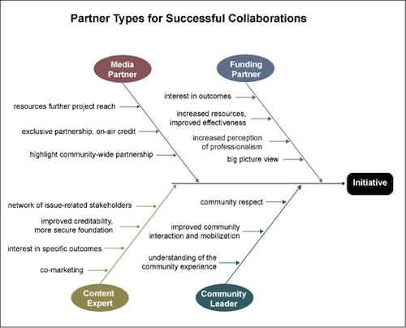

media
Partner types of successful collaborations

The National Center for Media Engagement has a wonderful set of tools and resources for planning, executing and evaluating community engagement (which also happens to be one of the Transmission Project’s core structural values). The above graphic is from the section entitled “Identifying Partners”.
Journalism's Digital Transition: Unique Legal Challenges and Opportunities
When:
April 9, 2010
Where:
Cambridge, MA
Website:
http://www.omln.org/conference The Berkman Center’s Citizen Media Law Project and Cyberlaw Clinic are pleased to announce a one-day symposium and CLE program to celebrate the launch of the Online Media Legal Network (OMLN). OMLN is a legal referral service that connects qualifying online journalism ventures and digital media creators with lawyers willing to provide legal services on a pro bono or reduced-fee basis. It supports promising ventures and innovative thinkers in online and digital media by providing access to legal help that would otherwise be unavailable.
Agenda
The Future of Journalism: Unpacking the Rhetoric
When:
April 29, 2010 - April 30, 2010
Where:
Stanford, CA April 29, 2010 - April 30, 2010
Thursday 4/29 Kick-off event: 7:30 p.m. - 9:30 p.m.
Friday 4/30 sessions: 9:00 a.m. - 5:15 p.m.
Sponsored by The Center for Internet and Society
This conference is designed to challenge and dissect the fundamental assumptions and biases embedded within the media debate. The event will bring together journalists, lawyers, scholars, technologists, and policymakers to analyze and discuss the evolution of journalism into the digital age.
Journalism Innovations III
When:
April 30, 2010 - May 2, 2010
Where:
San Francisco, CA
Website:
http://journalisminnovations.org Now in its 3rd year, the conference, produced by Independent Arts & Media, The University of San Francisco, G.W. Williams Center for Independent Journalism and the Society for Professional Journalists, brings together some of the brightest minds and most innovative projects to network and share skills and ideas.
Making Media Public Conference
When:
May 5, 2010 - May 7, 2010
Where:
Toronto, ON Traditional ways of making media are in crisis and steadfast models are threatened with extinction: media giants teeter on the edge of bankruptcy, local television stations are being closed, thousands of media workers have been laid off, and community radio and television are poorly supported. At the same time, new media are increasingly embraced by publics that, linked through social networks, produce and distribute an increasing range of their own content.
“Art, Access & Action: The Moral Imperative?” (A Major Arts & Media Summit in Chicago)
When:
April 8, 2010 - April 9, 2010
Where:
Chicago, IL Welcome.
This year a bunch of groups, organizations, and individuals will be coming together to host a major arts & media summit in Chicago. The Summit will be held at Columbia College Chicago and happen on April 8th and 9th from 10 am to 9 pm on both days.
Here is a list of organizations and individuals involved:
PEOPLE
Jeff Biggers, author of “Reckoning at Eagle Creek”
Elisa Kriesinger, PoliticalRemixVideo.com
Patrick Lichty, member of the Yes Men/Columbia College instructor
Kari Lydersen, In These Times contributing editor
FTC Workshop on the Future of Journalism
When:
March 9, 2010 - March 10, 2010
Where:
Washington, DC The Federal Trade Commission will hold its second two-day workshop on the future of journalism March 9-10, 2010, in Room 432 of the FTC Headquarters at 600 Pennsylvania Avenue, N.W. The agenda and information about the workshop can be found at http://www.ftc.gov/opp/workshops/news/mar9/agenda.pdf.
Transmission! Nashville
I will be in Nashville, Tennessee on Monday to participate in Listening to the Poor, a Learning Circle on Poverty hosted by the Inter-Agency Task force on Ministry with the Poor of the United Methodist Church.
Different frames of media justice
There are many wonderful threads to pull from “Media Justice Through the Eyes of Local Organizers”, a field report from the Funding Exchange Media Justice Fund that came out in September, 2009. In addition to analyzing the different frames groups may approach media and communications justice from, they also make clear that there can be no one-size-fits-all approach:
2009 Making Media Connections Conference
When:
June 9, 2010 - June 11, 2010
Where:
Chicago, IL Join community leaders, nonprofit communicators and board members, mainstream and independent journalists, publishers, media experts and the general public to discuss getting our communities’ important stories told.
Come ready to sharpen your media relations and communications skills at workshops and panel discussions lead by the nation’s top media relations experts. You’ll meet journalists interested in your stories and network with peers.